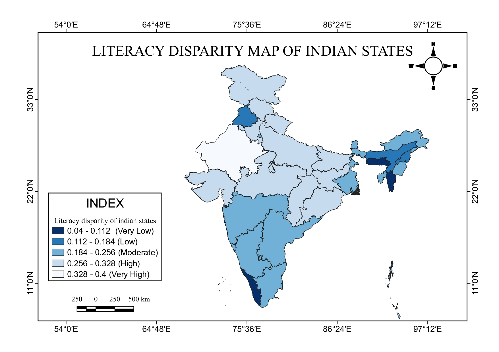

State-level Sopher's Index choropleth • 28+ states • Census of India 2011
This project maps literacy disparity across every Indian state using Sopher's Disparity Index — a statistical measure of inequality devised by geographer David Sopher in 1974. The index captures the gap between male and female literacy rates. States are shaded using a five-class sequential blue ramp from dark blue (very low disparity) to pale blue (very high disparity), revealing a stark spatial divide in educational equity across India.
Each state is filled according to its Sopher Index class. Dark blue indicates near-parity between male and female literacy; pale blue indicates the widest gaps. North arrow and scale bar are included for cartographic completeness.

Literacy Disparity Map of Indian States • Sopher's Index • 5 classes • Sequential Blues • QGIS 3.28.7-Firenze • Census 2011
India's hilly states show the smallest gaps. Meghalaya, Kerala, Mizoram, Nagaland and Sikkim all score 0.040–0.083, benefiting from lower population density and higher socioeconomic levels. Himachal Pradesh (0.257) and J&K (0.298) show minor discrepancies despite steep terrain — geography alone cannot explain inequalities here.
Urbanised states tend toward smaller gaps due to government investment and educational awareness. Yet variation exists — Delhi and Chandigarh show moderate disparities, while Goa, Maharashtra and Tamil Nadu show moderate-to-high inequalities, underlining that urbanisation alone cannot explain literacy equity.
Northern states exhibit significant disparities driven by large populations and rural-urban divides. Punjab defies the trend with a low score — suggesting that state-level policy and demographic factors outweigh broad geographic categorisation in explaining inequality.
The south is defined by low-to-moderate disparity — credited to high education awareness, sustained government investment, and lower rural population density. Kerala's extraordinarily low score demonstrates how deliberate policy and socioeconomic development can systematically reduce literacy inequalities over time.
The northeast shows mixed patterns. Meghalaya and Mizoram have very low inequality partly due to terrain and British colonial literacy investment. Nagaland, Assam, Arunachal Pradesh (0.228), Manipur and Sikkim show mild-to-moderate variance — illustrating the combined influence of geography and socioeconomic factors.
Large-population states typically exhibit wider literacy gaps. West Bengal is a notable exception. Uttar Pradesh, Bihar, Madhya Pradesh, Maharashtra and Rajasthan all display varied degrees reflecting the complex interplay of factors shaping educational attainment in densely populated regions.
These two states rank among the highest Sopher Index scores, driven by deep rural-urban splits and historical underinvestment in female education. The gap is widest in areas where women's access to primary schooling has lagged by generations.
Despite a high overall literacy rate (~94%), Kerala scores Very Low on the disparity index — meaning male and female literacy are nearly equal. The result of decades of progressive education policy dating to the pre-Independence Travancore state.
Despite geographic isolation and limited infrastructure, Meghalaya and Mizoram record the lowest disparity in India. Christian missionary schools established during the British era created a tradition of universal literacy that persists to this day.
India's Union Territories show the full range — Delhi and Chandigarh show moderate disparities thanks to urbanisation, while Daman & Diu and Dadra & Nagar Haveli show significant inequalities due to isolation and scarce educational resources.
Sopher's Disparity Index quantifies the gap between male and female literacy into a single comparable score per state.
| D | Disparity score — higher value means a greater gap between male and female literacy |
| X₂ | Higher literacy value (male literacy rate per state, Census 2011) |
| X₁ | Lower literacy value (female literacy rate per state, Census 2011) |
| log | Common logarithm (base 10) — normalises the ratio for cross-state comparison |